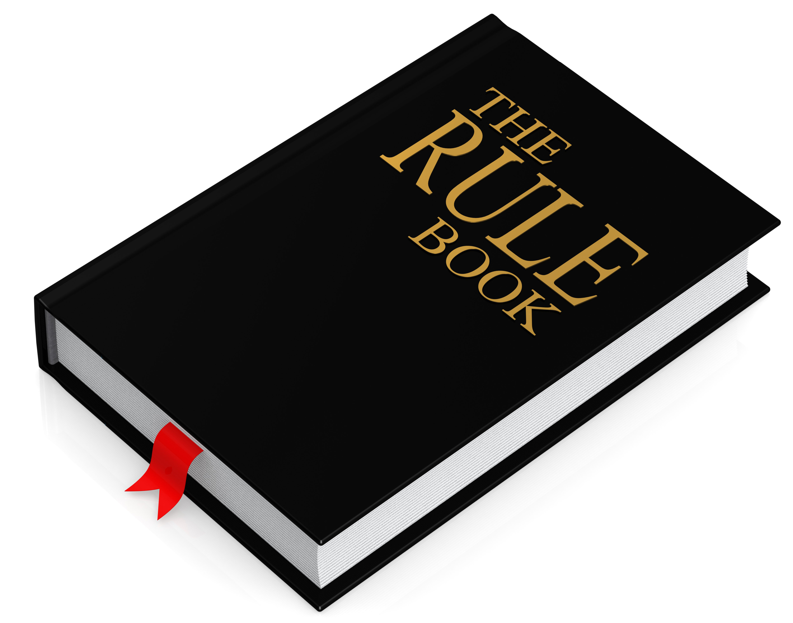

Основные правила игры в баскетбол
1. Мяч может быть брошен в любом направлении одной или двумя руками.
2. Мяч может быть отбит в любом направлении одной или двумя руками.
3. Игрок не может бежать с мячом. Игрок должен бросить мяч с того места, где он его поймал, с допущением броска, когда игрок получает мяч на хорошей скорости и пытается остановиться.
4. Мяч нужно держать кистями рук; нельзя использовать руки или тело для удержания мяча.
5. Нельзя никаким образом толкать, бить, держать, опрокидывать и подрезать оппонента. Первое нарушение этого правила любым игроком должно считаться фолом; после второго нарушения игрок удаляется с площадки до следующего забитого мяча или, если была очевидная попытка травмирования оппонента, до конца игры. Замена запрещается.
6. Удар по мячу кулаком является фолом, так как нарушает третье и четвертое правила, и наказывается тем же способом, который описан в пункте 5.
7. Если одна из команд совершает три последовательных фола, не прерываемых при этом фолами противника, то это считается забитым противником голом.
8. Забитым мячом считается мяч, когда он брошен или отбит с земли в корзину и не выпал, если защитники не касались мяча и не мешали попаданию. Если мяч покоится на краях, и защитник двигает корзину, это считается забитым мячом.
9. Когда мяч выходит за пределы площадки, он должен быть вброшен или отбит в игровое поле первым коснувшимся игроком. В случае спора арбитр должен вбросить мяч прямо в площадку. На вброс мяча игроку дается пять секунд. Если он держит мяч дольше, мяч отдается оппоненту. Если одна из сторон продолжает задерживать игру, то арбитр засчитывает ей фол.
10. Арбитр должен следить за игроками, отмечать фолы и уведомлять судей, когда случаются три последовательных фола. Он вправе удалять игроков в соответствии с правилом 5.
11. Судья должен следить за мячом и решать, когда мяч находится в игре, в стадии вбрасывания, чья сторона им владеет, и должен следить за временем. Он должен определять, когда команда забивает мяч и вести счёт, исполняя также любые другие процессуальные обязанности.
12. Игра должна длиться два тайма по пятнадцать минут с пятиминутным перерывом между ними.
13. Победившей считается команда, забившая большее количество очков.
Также следует изучить отличия правил баскетбола от правил стритбола:
• В баскетбол обычно играют в специальных закрытых помещениях, стритбол – это «дитя» улицы и турниры стараются проводить под открытым небом.
• Вторым отличием от баскетбола является размер игровой площадки – в стритболе она составляет ровно половину стандартной баскетбольной площадки. На стритбольной площадке также как и на баскетбольной, есть линия для штрафных бросков, дуга и места для подбора.
• Кольцо в стритболе всего лишь одно.
• Еще одним заметным отличием этих двух видов спорта является количество игроков в командах. В стритболе обычно играют «три на три» (плюс один игрок находится в запасе).
• Количество судей, обслуживающих матч – любое, хотя, обычно этот один судья и его помощник - секундометрист.

Состав команды
Каждая баскетбольная команда состоит из 12 игроков, которые во время матча заменяют друг друга. Одновременно на площадке находятся по пять человек от каждой команды.
Игроки в составе команды различаются по позициям: разыгрывающий защитник (первый номер), атакующий защитник (второй номер), легкий форвард (третий номер), тяжелый форвард (четвертый номер), центровой (пятый номер).
Игроки, которые не попали в основной состав, находятся на скамейке запасных и могут выходить на площадку посредством замен.
Игровое время
Игра состоит из четырех периодов по 10 минут. Перерывы между первой и второй четвертью, а также между третьей и четвертой составляют 2 минуты. Самый длинный перерыв — 15 минут, его делают в середине игры, после второй четверти. В этот момент команды меняются кольцами.
Если к концу матча счет равный, то судья добавляет овертайм — 5 минут. Овертайм назначают столько раз, сколько потребуется, пока не выявят победителя.
Во время игры тренер команды может взять тайм-аут. Такой перерыв длится минуту. Чаще всего тайм-аут берут, чтобы скорректировать тактику.
Игровая площадка
Игровая площадка для игры в баскетбол представляет собой прямоугольную плоскую твердую поверхность. Размеры баскетбольной площадки в ФИБА и НБА разнятся по минимуму. Стандарты ФИБА — 28 м на 15 м. Для Национальной баскетбольной ассоциации — 28,7 м на 15,3 м. Покрытие должно быть гладкое, ровное, без неровностей, изгибов. Так же стоит заметить, что для состязаний не такого высокого уровня размеры баскетбольной площадки могут отличаться
Высота потолка или крыши должна быть на уровне минимум 7 метров от площадки.
Баскетбольная площадка имеет разметку. Разметка отличает следующие части площадки: центральный круг, центральная линия, боковые и лицевые линии, трехочковые линии, линии штрафного броска, трехсекундные зоны.
Терминология баскетбола
Атакующий защитник или Второй номер – одно из пяти амплуа в баскетболе. Представляет заднюю линию команду. Скоростной, быстрый, подвижный игрок.
Блокировка игрока – нарушение правил, когда защитник преграждает путь нападающему с мячом, находясь в движении.
Блок или Блок-шот – действие на площадке, которое не позволяет сопернику отличиться.
Боковая линия – линии по бокам площадки. Ограничивают игровую зону.
Большой перерыв или половина – перерыв между первой и второй половиной игры..
Ведение мяча – владение мячом. Для передвижению по площадке необходимо ударять мяч в пол без нарушения правил пробежки.
Двойное ведение – нарушение правил, когда при ведении игрок одновременно касается мяча двумя руками или после завершения ведения продолжает его снова. Приводит к потере владения.
Дисквалифицирующий фол – фол неспортивного характера. Грубый фол.
Дополнительное время или овертайм – назначается при равном счете после основного времени игры.
Задняя линия – защитники команды.
Заслон – постановка блокировки сопернику в пределах правил.
Зонная защита – метод обороны, при котором каждый защитник отвечает за конкретную зону площадки, а не за конкретного игрока соперника.
Игра ногой – сознательная игра ногой. Нарушение правил. Приводит к потере и переходу владения.
Краска – трехсекундная зона вместе с полукругом на штрафной линии. Ограничивает время нахождения игрока нападения в ней тремя секундами. Отличается цветом.
Легкий форвард или Третий номер – одно из пяти амплуа в баскетболе. Форвард, который отвечает за набор очков и борьбу под щитом.
Личная защита – защита, где каждый защищается против своего игрока.
Лицевая линия – линия, ограничивающая площадку по длине.
Нарушение правила зоны – ситуация, при которой игрок атакующей команды отдает пас через центральную линию на свою половину площадки. Наказывается переходом владения к сопернику.
Нарушение правила восьми секунд (англ. backcourt violation) – ситуация, в которой нападающая команда не успевает перевести мяч со своей половины площадки на чужую за 8 секунд.
Передача или пас – действия отвечающие за взаимодействие игроков на баскетбольной площадке. Выполняется от одного игрока команды к другому.
Перехват – переход владения к команде защиты, когда он вынуждает игрока атаки потерять мяч.
Переход – нападение, начинающееся с овладения мячом, пока защитники не успели занять свои позиции, переходящее иногда в быстрый прорыв.
Периметр или средняя дистанция – зона внутри трехочковой линии, но снаружи «краски».
Подбор – овладение мячом после неточного броска.
Помеха попаданию мяча или гоалтендинг – нарушение при блокировании броска не по правилам, Если мяч находится на снижающейся траектории и полностью выше уровня кольца или находится на дужке, или коснулся щита, нападающей команде засчитывается попадание независимо от того, мог мяч попасть в кольцо или нет.
Потеря – потеря владения во время игры либо при нарушении правил.
Правило трех секунд запрещает игроку нападения находится в трехсекундной зоне большее количество времени. Ограничивается тремя секундами.
Пробежка (англ. travel, walk) – нарушение правил ведения мяча. Наказывается переходом владения.
Пронос мяча – нарушение правил, при котором игрок при ведении поддерживает мяч ладонью снизу. Такое нарушение считается проносом или двойным ведением.
Прыжок с мячом – действие, когда игрок выпрыгивает с мячом, но не избавляется от него до приземления. Нарушение правил.
Разыгрывающий защитник или Первый номер – представитель задней линии, который отвечает за розыгрыш атакующих комбинаций.
Результативная передача или ассист – статистическое действие, когда после паса игрок забивает мяч.
Спорный мяч – вбрасывание мяча в начале игры или после спорной ситуации.
Таймер – время, которое отсчитывается на щитом. Лимитирует команду нападения по времени в атаке.
Технический фол – фол за неспортивное поведение без физического контакта или за процессуальные нарушения (шесть игроков на площадке). За технический фол бьется один штрафной бросок любым игроком команды противника.
Тяжелый форвард или Четвертый номер – одно из пяти амплуа баскетболе. Является представителем передней линии команды. Отличается атлетизмом, мощью, ростом.
Фол – нарушение правил. Отличаются обычные фолы, неспортивные, технические.
Центровой или Пятый номер – одно из пяти амплуа в баскетболе. Обычно самые высокие игроки в баскетболе. Умело играют под щитом, борются за подбор.
Штрафная линия – линия, начинающую трехсекундную зону. С нее пробиваются штрафные броски.
Штрафной бросок – бросок без сопротивления, совершаемый со штрафной линии после нарушения правил, стоящий одно очко. Обычно дается два штрафных броска за персональный фол, три – если фол был на трехочковой линии, один – за технический и, если мяч был забит.
Щит – плоскость, к которой крепится кольцо.